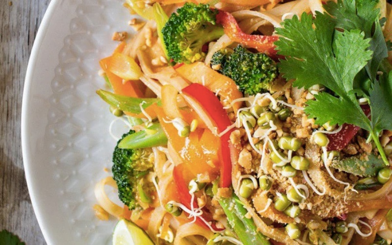

Phở Xào

Description
"The interesting thing is that vegetarian pho can be combined with many delicious and nutritious vegetables such as bell peppers, green beans, and broccoli, creating many unique flavors. The beautiful color combination of various vegetables makes the vegetarian dish even more attractive. Those who are following a diet should also try this dish on their menu."
Ingredients
- 300g bánh phở
- 50g bông cải xanh
- 50g cà rốt
- 50g đậu que
- 50g ớt chuông (đỏ)
- 0g đậu phộng rang
- 2 muỗng canh dầu hào Maggi
- 2 muỗng canh nước tương Maggi
- 3 muỗng canh nước cốt me
- 2 muỗng canh dầu điều
- 3 muỗng canh đường trắng
- 10g hành boa rô
Steps
- Đầu tiên bạn rửa sạch rau củ gồm bông cải xanh, cà rốt, đậu que, ớt chuông. Sau đó cắt sợi vừa ăn cà rốt, ớt chuông, còn đậu que bạn cắt nhỏ dạng xéo, bông cải tách từng bông nhỏ vừa ăn.
- Cho các loại rau củ vừa cắt vào nồi nước đang sôi để trụng sơ, không nấu quá chín. Sau đó bạn vớt tất cả ra rồi cho vào tô nước đá để rau củ giữ được màu tươi xanh và vẫn giòn.
- Bạn cho 2 muỗng canh dầu ăn vào chảo, chờ dầu nóng bạn cho rau củ đã trụng vào, nêm 1 muỗng canh nước tương Maggi, xào đều tay thì vớt ra dĩa.
Tiếp tục dùng chảo vừa xào rau củ, bạn cho 1 muỗng canh dầu ăn vào, chờ dầu nóng bạn cho 10g hành boa rô vào, phi đến khi hành thơm thì cho 3 muỗng canh nước cốt me, 3 muỗng canh đường, 2 muỗng canh dầu điều, 2 muỗng canh tương ớt, 1 muỗng canh nước tương. Nấu sôi hỗn hợp 1 phút, bạn cho bánh phở vào trộn đều.
Tiếp đến bạn cho rau củ vào và xào lên cùng phở là đã hoàn thành.